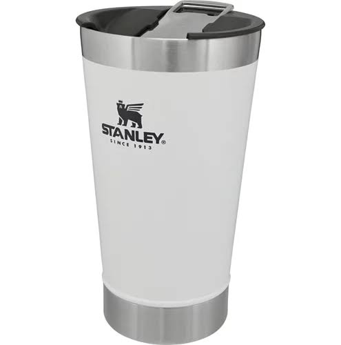

MAIS VENDIDO
1º em Copos Térmicos
Copo Térmico Stanley 473ml Verde
★★★★★
+50 mil vendidos

OFERTA DO DIA
de R$ 149,90
por R$ 79,90
Promoção válida para pagamento via Pix
Descrição do produto
O Copo Térmico Stanley 473ml é ideal para manter sua bebida gelada por até 4 horas ou quente por até 45 minutos. Fabricado com a qualidade lendária da Stanley, ele é resistente, durável e perfeito para todas as ocasiões.
CARACTERÍSTICAS:
- Capacidade: 473 ml
- Mantém bebidas geladas por até 4 horas
- Parede dupla com isolamento a vácuo
- Aço inox 18/8 (não enferruja)
- Tampa com abertura fácil
- Livre de BPA
- Altura: 14 cm | Diâmetro: 8,5 cm
- Cor: Verde
ITENS INCLUSOS:
- 1 Copo Stanley 473ml
- 1 Tampa original
Garantia do vendedor: 90 dias